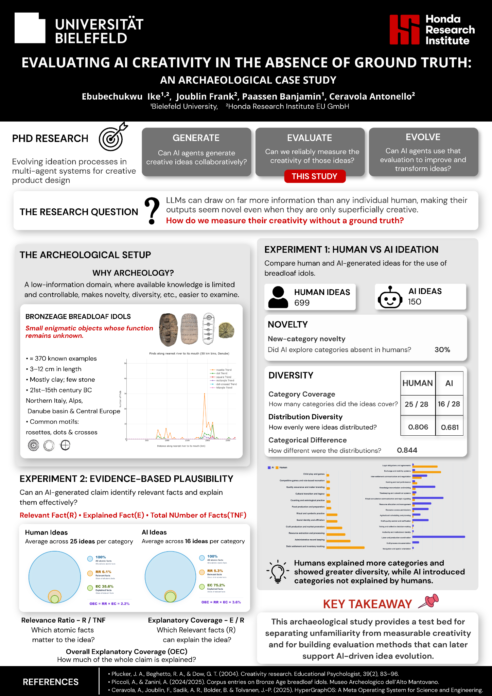

Explore
Go beyond the poster and explore the Breadloaf Idol dataset.
EGN PRESENTATION · 16 SEPTEMBER 2026
This website contains the additional material supporting my poster presentation on AI creativity, archaeological evidence, and Breadloaf Idols.
EXTRA MATERIALS
The poster gives the overview. This site provides the material behind it: the interactive archaeological database, the experimental logic flows, and the research paper.
Go beyond the poster and explore the Breadloaf Idol dataset.
See how the two experiments were constructed, step by step.
Read the research behind the archaeological corpus and analysis.
01 · WEBSITE
The interactive database behind the project. Explore the archaeological corpus, inspect individual objects, and investigate chronology, provenance, motifs, and other recorded properties.
INTERACTIVE RESOURCE
The Data Explorer is the main digital resource accompanying this research.
Open Data Explorer ↗02 · LOGIC FLOWS
The poster presents the results. These diagrams show the computational process used to obtain them.
EXPERIMENT 1
Human and AI claims are generated, organized into a shared category space, and compared using measures of category coverage, distribution diversity, new-category novelty, and categorical difference.

EXPERIMENT 2
AI-generated claims are compared with atomic archaeological facts. Relevant facts are identified, then tested for whether the claim can explain them effectively.

03 · PAPER
Chronology, Motifs, Rivers, and AI in the study of Breadloaf Idols
The paper develops the archaeological corpus and computational framework that support this work, bringing together chronology, spatial relationships, motifs, images, bibliography, and AI-assisted analysis.

RESEARCH OUTPUT
The work provides the archaeological and methodological foundation for studying the Breadloaf Idols and for testing AI-generated interpretations in a domain where the original function of the objects remains uncertain.
Publication venuesPUBLICATION VENUES
Further publication and dissemination information will be added here as the work progresses.
THE POSTER
An archaeological case study exploring how novelty, diversity, and evidence-based plausibility can help evaluate AI-generated ideas.

END
And thank you for taking the time to explore the work beyond the poster.